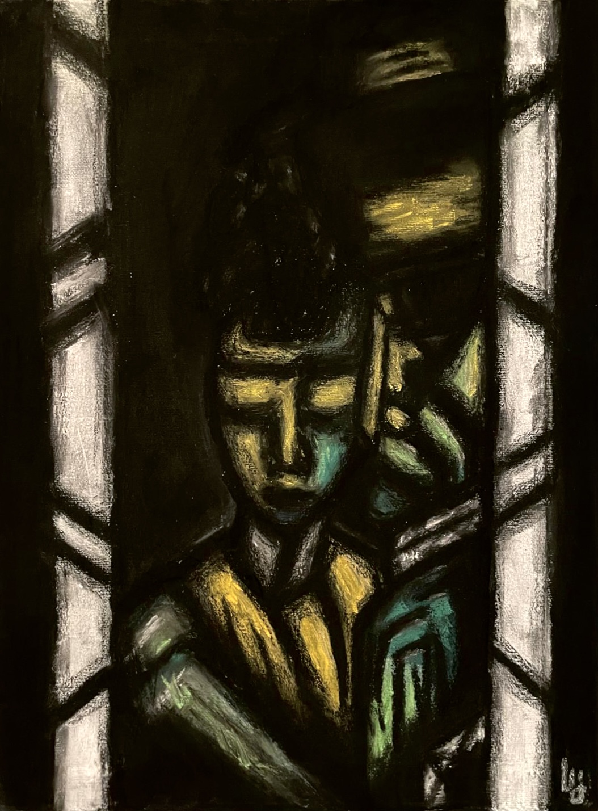
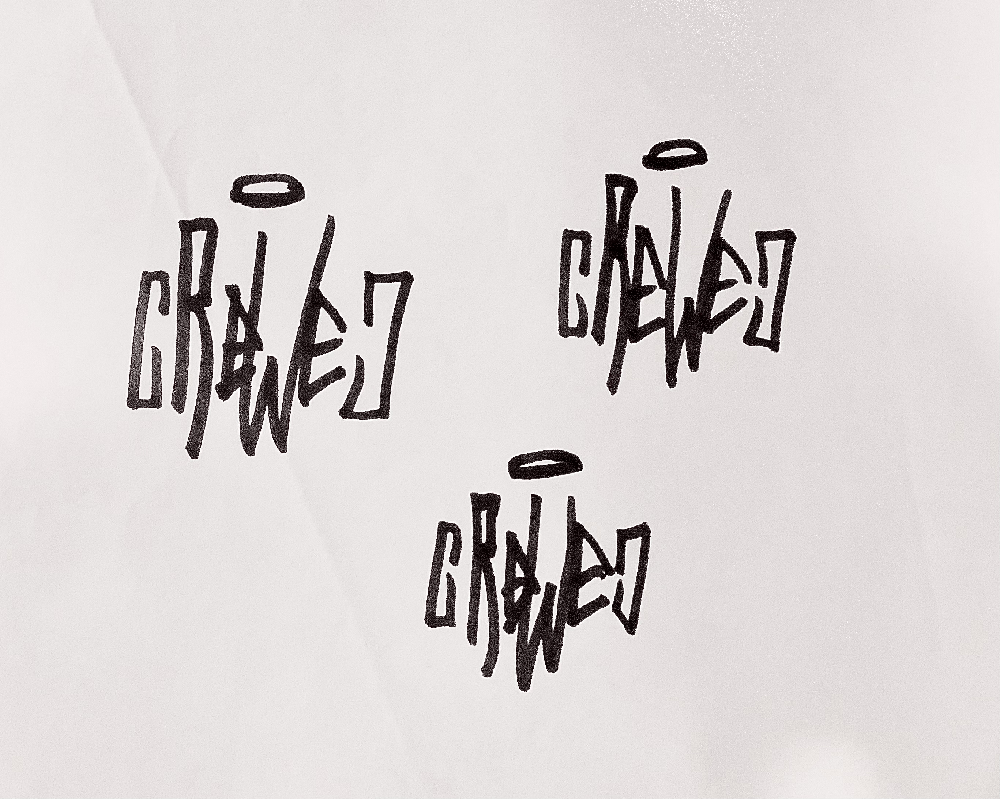
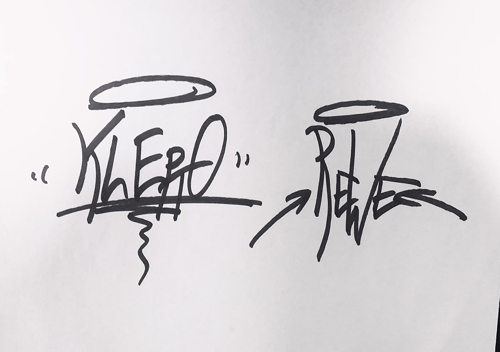
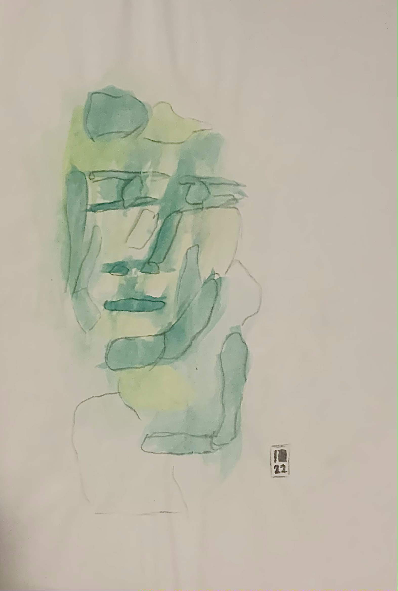

Shown above are pictures of some old paintings and drawings I did.
I like to emerge into the styles of different artists, a lot of what is shown are essentially 'case studies'.
In these, intentional or accidental variation then produces something interesting sometimes.
If not, I aim to experiment with and learn different mediums and techniques.
This video shows some experimentation with methods from fluid-painting.
By filming the colors, all of the dynamics up until the finished 'end result' are captured.
In this way, the abstract visual spaces of this art form are experienced from a 'new angle'.
Close-up shots and camera movement are used to further enhance the immersiveness of these spaces.
This portfolio is for me to digitize and collect some of my creative works.
The site is purely personal and does not process user data or utilize analysis tools.
Nothing shown is advertised or for sale. I don't take contract work.